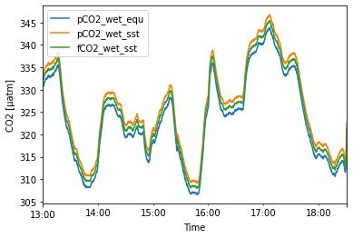

Examples
Here, we use a short excerpt of real underwater CO2 measurements to demonstrate the routines in the oceanpack module.
Read in the file
First, read the file into a pd.DataFrame and show head and variable names.
The
read_oceanpack()routine can be fed with either a single file path or a list of file paths.
[1]:
!head example_op.log
SW Build Datum: Mar 20 2019/12:03:57
NDI Serial: 00000000
Internal Analyzer Serial: HGA-2235 27.07.2017
@SENSOR,,,,,LI840,LI840,LI840,LI840,LI840,LI840,LI840,LI840,LI840,LI840,LI840,LI840,LI840,LI840,LI840,LI840,LI840,LI840,LI840,LI840,LI840,AD24_1,Int.Flow,TCN75A,HWHSC,GPX16,GPX16,GPX16,GPX16,GPX16,GPX16,SS_CTD48,SS_CTD48,Block USV,Block USV,Block USV,Block USV,,,,,,,,,,,,
@NAME,DATE,TIME,FRAC,SEC,CO2,CO2abs,H2O,H2Oabs,H2Odew,CellTemp,CellPress,VInput,CO2raw,CO2ref,H2Oraw,H2Oref,H2OzCal,CO2zCal,Span1Cal,Span2Cal,SWVers,CO2kzero,CO2kspan1,CO2kspan2,H2Okzero,AIN3_mA/Waterflow,FLOWgas,TempAirInt,DPressInt,Latitude,Longitude,Speed,Course,Magn.Var,GPS Time,waterTemp,waterCond,pvuaVin,pvuaVout,pvuaPuff,pvuaIout,PUMP,VALVE1,VALVE2,VALVE3,VALVE4,VALVE5,VALVE6,VALVE7,VALVE8,VALVE9,STATUS
@UNIT,YYYY-MM-DD,HH:MM:SS,MS,RUNSEC,ppm,-,ppt,-,-,�C,mbar,VDC,-,-,-,-,date,date,date,date,-,-,-,-,-,mA/l/min,ml/min,�C,mbar,ddmm.mmmm,dddmm.mmmm,knots,�,deg,hhmmss,�C,mS/cm,VDC,VDC,on/off,A,ON/OFF,ON/OFF,ON/OFF,ON/OFF,ON/OFF,ON/OFF,ON/OFF,ON/OFF,ON/OFF,ON/OFF,STATE
@A0,,,,,0.000000,0.000000,0.000000,0.000000,0.000000,0.000000,0.000000,0.000000,0.000000,0.000000,0.000000,0.000000,0.000000,0.000000,0.000000,0.000000,0.000000,0.000000,0.000000,0.000000,0.000000,-3.000000,0.000000,0.000000,0.000000,0.000000,0.000000,0.000000,0.000000,0.000000,0.000000,0.000000,0.000000,0.000000,0.000000,0.000000,0.000000,,,,,,,,,,,,
@A1,,,,,1.000000,1.000000,1.000000,1.000000,1.000000,1.000000,1.000000,1.000000,1.000000,1.000000,1.000000,1.000000,1.000000,1.000000,1.000000,1.000000,1.000000,1.000000,1.000000,1.000000,1.000000,0.950000,1.000000,1.000000,1.000000,1.000000,1.000000,1.000000,1.000000,1.000000,1.000000,1.000000,1.000000,1.000000,1.000000,1.000000,1.000000,,,,,,,,,,,,
@A2,,,,,0.000000,0.000000,0.000000,0.000000,0.000000,0.000000,0.000000,0.000000,0.000000,0.000000,0.000000,0.000000,0.000000,0.000000,0.000000,0.000000,0.000000,0.000000,0.000000,0.000000,0.000000,0.000000,0.000000,0.000000,0.000000,0.000000,0.000000,0.000000,0.000000,0.000000,0.000000,0.000000,0.000000,0.000000,0.000000,0.000000,0.000000,,,,,,,,,,,,
@MEAN,,,,,1,1,1,1,1,1,1,1,1,1,1,1,1,1,1,1,1,1,1,1,1,1,10,1,1,1,1,1,1,1,1,1,1,1,1,1,1,,,,,,,,,,,,
[2]:
from oceanpack import *
file = 'example_op.log'
df = read_oceanpack(file)
print(df.iloc[:,:6].head())
print(df.columns)
FRAC SEC CO2 CO2abs H2O H2Oabs
datetime
2019-05-09 13:00:00 0.0 11530.0 324.070 0.079997 13.2548 0.086408
2019-05-09 13:00:10 0.0 11540.0 324.191 0.080007 13.2614 0.086425
2019-05-09 13:00:20 0.0 11550.0 324.126 0.080019 13.2564 0.086426
2019-05-09 13:00:30 0.0 11560.0 324.335 0.080061 13.2586 0.086441
2019-05-09 13:00:40 0.0 11570.0 324.320 0.080070 13.2580 0.086449
Index(['FRAC', 'SEC', 'CO2', 'CO2abs', 'H2O', 'H2Oabs', 'H2Odew', 'CellTemp',
'CellPress', 'VInput', 'CO2raw', 'CO2ref', 'H2Oraw', 'H2Oref',
'H2OzCal', 'CO2zCal', 'Span1Cal', 'Span2Cal', 'SWVers', 'CO2kzero',
'CO2kspan1', 'CO2kspan2', 'H2Okzero', 'AIN3_mA/Waterflow', 'FLOWgas',
'TempAirInt', 'DPressInt', 'Latitude', 'Longitude', 'Speed', 'Course',
'Magn.Var', 'GPS Time', 'waterTemp', 'waterCond', 'pvuaVin', 'pvuaVout',
'pvuaPuff', 'pvuaIout', 'PUMP', 'VALVE1', 'VALVE2', 'VALVE3', 'VALVE4',
'VALVE5', 'VALVE6', 'VALVE7', 'VALVE8', 'VALVE9', 'STATUS'],
dtype='object')
Hint: Depending on the version of the OceanPack not all of the for the following calculations required variables are stored in the log files of the analyzer. It might be necessary to combine datasets both from the Analyzer as well as from the NetDI unit. Both files can be usually read by
read_oceanpack()and might be combined, for example, viadf_combined = pd.merge_asof(data_netdi.sort_index(), data_analyzer.sort_index(), left_index=True, right_index=True, tolerance=pd.Timedelta('2min'), direction='nearest')
Convert coordinates
Convert coordinates from ‘ddmm.mmmm’ format into ‘dd.dddd’.
[3]:
print(df['Longitude'].tail(3))
print('\nConvert coordinates...\n')
df['Longitude'] = decimal_degrees(df['Longitude'])
df['Latitude'] = decimal_degrees(df['Longitude'])
print(df['Longitude'].tail(3))
datetime
2019-05-09 18:30:30 -453.0803
2019-05-09 18:30:40 -453.1092
2019-05-09 18:30:50 -453.1395
Name: Longitude, dtype: float64
Convert coordinates...
datetime
2019-05-09 18:30:30 -4.884672
2019-05-09 18:30:40 -4.885153
2019-05-09 18:30:50 -4.885658
Name: Longitude, dtype: float64
Compute pressure at equilibrator
The OceanPack only measures the pressure at the analyzer cell (\(p_\text{cell}\)) as well as the pressure difference \(p_\text{diff}\) at the intake. To retrieve the pressure at the equilibrator (\(p_\text{equ}\)), we build a moving average of the difference pressure (to smooth the fluctuations) and subtract it from the cell pressure. Finally, we convert the pressure into atm units.
[4]:
pressure_equ = df['CellPress'] - df['DPressInt'].rolling('1min').mean() # in mBar
df['press_equ'] = pressure2atm(pressure_equ)
Hint: The routine
oceanpack.helpers.pressure2atmtries to guess the input unit by hands of the order of magnitude of the input values. If this doesn’t work (check the info message above), convert it by hand.
Filter non-operating phases
Usually, the OceanPack runs through various phases (such as spin-up, calibration, normal operation). For our final calculation we want to get rid of all the CO2 related values in non-operating phases and also skip the first x minutes after each non-operating phase is finished, since after calibration, the analyzer usually needs some time to get back to normal levels.
[5]:
data = df
status_var = 'STATUS'
[ ]:
df = set_nonoperating_to_nan(df, col=[x for x in df.columns if 'CO2' in x], shift="20min", status_var='STATUS')
CO2 calculations
Now, after all the preparation is done, let’s calculate our CO2 variables of interest.
First, we need to convert the xCO2 concentration, which is given by the analyzer, into partial pressure.
According to [Dickson et al., 2007], SOP 4, the partial pressure of carbon dioxide in air, which is in equilibrium with a sample of seawater, is defined as the product of the mole fraction of CO2 in the equilibrated gas phase and the total pressure of equilibration \(p_\text{equ}\):
\begin{equation*} pCO_2 = xCO_2 \cdot p_\text{equ} \end{equation*}
[7]:
df['pCO2_wet_equ'] = ppm2uatm(df['CO2'], df['press_equ'])
Second, we want to apply a temperature correction. This might be necessary when the temperatures at the water intake (often outside the ship) and at the OceanPack CTD differ. The correction used here follows [Takahashi et al., 2009]:
\begin{equation*} {(xCO_2)}_{SST} = {(xCO_2)}_{T_\text{equ}} \cdot \exp{\Big(0.0433\cdot(SST - T_\text{equ}) - 4.35\times 10^{-5}\cdot(SST^2 - T_\text{equ}^2)\Big)} \end{equation*}
For demonstration purposes, we create an artificial SST, which is slightly cooler than the water temperature measured at the equilibrator.
Hint: If the measurements were taken onboard a ship, the way for the water from the intake to the OceanPack might be quite long. In that case, one should first perform a lag analysis and correct the time series of the intake temperature accordingly.
[8]:
df['insituTemp'] = df['waterTemp'] - .2
df['pCO2_wet_sst'] = temperature_correction(df['pCO2_wet_equ'], df['waterTemp'], df['insituTemp'])
Finally, we compute the fugacity by hands of the before calculated partial pressure, the pressure at the equilibrator, and the SST.
According to [Weiss and Price, 1980], the fugacity can be calculated via
where \(SST\) is the sea surface temperature in K, \(R\) the gas constant and \(B(CO_2,SST)\) and \(\delta(CO_2,SST)\) are the virial coefficients for CO2 (both in \(\text{cm}^3\,\text{mol}^{-1}\)), which are given as
and
[9]:
df['fCO2_wet_sst'] = fugacity(df['pCO2_wet_sst'], df['press_equ'], df['insituTemp'])
Plot the results
Let’s plot the time series of the pCO2 in wet air both at the equilibrator and at sea-surface temperature as well as the fugacity given in wet air and at sea-surface temperature.
[10]:
import matplotlib.pyplot as plt
df['pCO2_wet_equ'].plot()
df['pCO2_wet_sst'].plot()
df['fCO2_wet_sst'].plot()
plt.legend()
plt.xlabel('Time')
plt.ylabel('CO2 [µatm]')
plt.show()
